Introduction
The SparkFun GNSS L1/L5 Breakout - NEO-F10N, SMA is a standard precision GNSS board with meter-level positional accuracy. The NEO-F10N uses the L1/L5 bands instead of the more commonly seen L1/L2 bands. Utilizing the L5 band, the NEO-F10N delivers improved performance under challenging urban environments the L5 signals fall within the protected ARNS (aeronautical radio navigation service) frequency band. This band is less subject to RF interference.

This breakout supports concurrent reception of three GNSS constellations: GPS, Galileo, and BeiDou. The proprietary dual-band multipath mitigation technology from the u-blox F10 allows the module to choose the best signals from both bands to achieve a significantly better position accuracy in challenging urban environments than with the L1 band alone.
What's different from other u-blox modules is that the NEO-F10N module only supports one serial UART communication port. U-blox based GPS products are configurable using the popular, but dense, windows program called u-center. Plenty of different functions can be configured on the NEO-F10N: baud rates, update rates, spoofing detection, external interrupts, SBAS, etc. We've included a few basic UART examples with our SparkFun Arduino Library to get started.
In this tutorial, we'll go over the hardware and how to hookup the breakout board. We will also go over a few basic Arduino examples to get started!
Required Materials
To follow along with this tutorial, you will need the following materials at a minimum. You may not need everything though depending on what you have. Add it to your cart, read through the guide, and adjust the cart as necessary.
- 1x SparkFun GNSS L1/L5 Breakout - NEO-F10N, SMA [GPS-24114]
- 1x Reversible USB A to C Cable - 0.8m [CAB-15425]
- 1x Reinforced Interface Cable - SMA Male to TNC Male (10m) [CAB-21740]
- 1x GNSS L1/L5 Multi-Band High Precision Antenna - 5m (SMA) [GPS-23814]
- 1x SparkFun IoT RedBoard - ESP32 Development Board [WRL-19177]


GNSS Accessories
Depending on your setup, you may need the following mounting hardware. As included earlier in the required materials, the antenna ground plate below is needed when using multi-band antennas that do not have a good ground plane.

For users that decide to use the SPK6618H multi-band antenna as an alternative, users would not need to include the antenna ground plate. The mounting hardware listed below is also typically used with the SPK6618H multi-band antennas. The reinforced interface cable between the SMA to TNC also needed for the SPK6618H multi-band antennas.


Radios (Optional)
For users that require radios to send data wirelessly, you could use the following radios.


Tools (Optional)
You will need a soldering iron, solder, and general soldering accessories for a secure connection when using the plated through holes. You will also need a hobby knife to disable the UART connection between the CH340 and the NEO-F10N.


Prototyping Accessories (Optional)
For those using radios to connect a base station and rover together, you will need to connect to the PTHs. You could use IC hooks for a temporary connection depending on your setup and what you have available. Of course, you will want to the solder header pins for a secure connection. Below are a few prototyping accessories that you may want to consider.


Suggested Reading
If you aren’t familiar with the following concepts, we also recommend checking out a few of these tutorials before continuing.


You may also be interested in the following blog posts on GNSS technologies.
-

GPS vs GNSS
Hardware Overview
In this section, we will highlight the hardware and pins that are broken out on the SparkFun GNSS L1/L5 Breakout - NEO-F10N, SMA. For more information, check out our Resources and Going Further for the NEO-F10N.
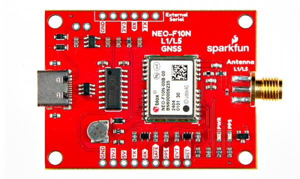 |
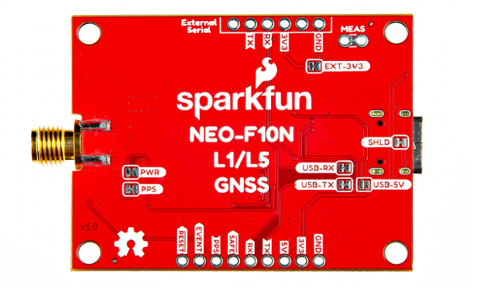 |
| Top View | Bottom View |
NEO-F10N Module
The board breaks out the NEO-F10N with some application circuits.
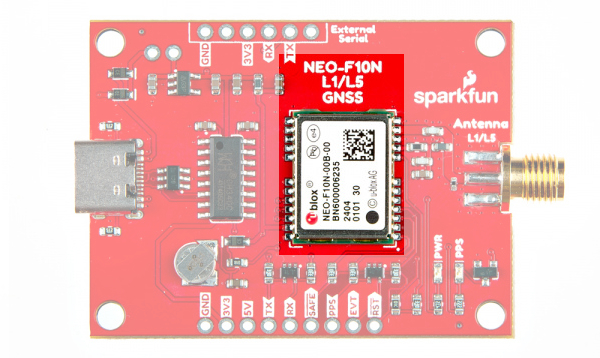 |
| u-blox NEO-F10N Module |
Similar to the other u-blox engines, the NEO-F10N is a GNSS Receiver. The module supports the concurrent reception of three GNSS systems: GPS, Galileo, and BeiDou. The NEO-F10N utilizes the L1/L5 bands as opposed to other u-blox modules that use L1/L2, such as the NEO-M9N.
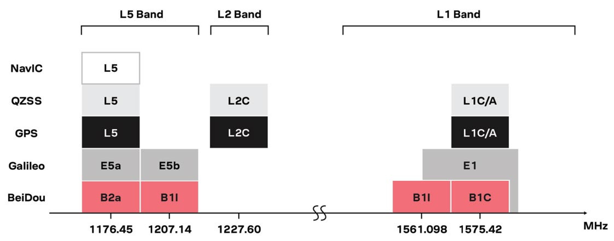 |
| Image Courtesy of u-blox: GPS Signals Migration White Paper |
Utilizing the L5 band, the NEO-F10N delivers improved performance under challenging urban environments because the L5 signals fall within the protected ARNS (aeronautical radio navigation service) frequency band. This band is less subject to RF interference. Below is a comparison of a single-band (L1) vs dual-band (L1/L5) GNSS test with a car driving through an urban environment. Tracking the vehicle was better when utilizing the L1/L5 bands.
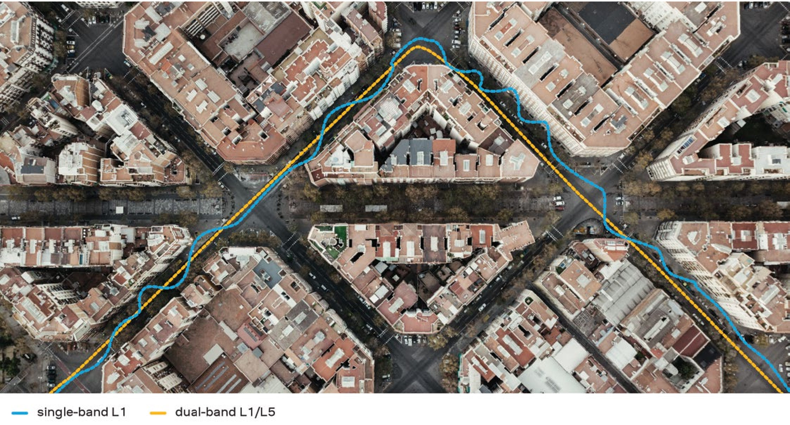 |
| Image Courtesy of u-blox: GPS Signals Migration White Paper |
Note
As of the writing of this tutorial, it is important to note that L5 band is still not yet fully operational on GPS and Galileo. It is expected to be fully operational by 2025.
The module can achieve meter-level accuracy with a satellite lock. Below are a few specs taken from the datasheet. For more information, check out the related documents for the NEO-F10N in the Resources.
- Time to First Fix: 28s (cold), 2s (hot)
- Max Navigation Rate for Single GNSS Configuration (GPS): 20 Hz
- Positional Accuracy (GPS): 1.5m
- Time Pulse Accuracy: 30ns
- Operational Limits
- Max G: ≤ 4G
- Max Altitude: 80km (49.7 miles)
- Max Velocity: 500m/s (1118mph)
- Software Configurable
- Baud Rate (38400 Baud, default)
- Odometer
- Spoof Detection
- External Interrupt
- Pin Control
- Many others!
- Supports: NMEA, UBX over UART
Power
There are a variety of power and power-related nets broken out on the USB connector and through hole pads. 5V power from the USB C Connector or PTH is regulated down to 3.3V with the AP2112K 3.3V/600mA voltage regulator. The logic levels for the NEO-F10N is 3.3V for the I/O pins.
- 5V — Power from the USB C connector's VBUS provides power to the 5V bus. The 5V net is also connected to the edge PTH pin labeled as 5V and the input of the 3.3V voltage regulator. Built-in Schottky diodes are included on the VBUS and 5V nets for protection. Make sure that power you provide to this pin does not exceed 6 volts.
- 3V3 — This connects to the 3.3V net. Both sides of the board includes a 3.3V pin (labeled as 3V3) that should only be provided with a clean 3.3V power signal.
- GND — Of course, is the common, ground voltage (0V reference) for the system.
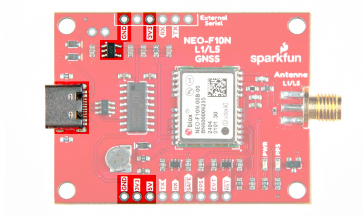 |
| Power from USB and PTHs |
Backup Battery
The small metal disk is a small lithium battery. This battery does not provide power to the IC like the 3.3V system does, but to relevant systems inside the IC that allow for a quick reconnection to satellites. The first time to fix (TTFF) is about ~28 seconds. With the backup battery, the hot start is less than 2 seconds.
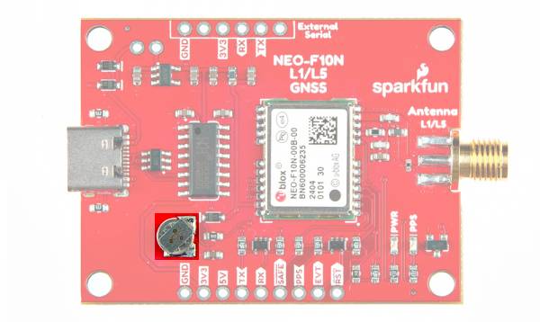 |
| Backup Battery Highlighted |
CH340C USB-to-Serial Converter
The board includes a built-in CH340 USB-to-serial converter to connect the board to a computer's USB port. This is useful for users viewing data, configuring the NEO-F10N, or updating firmware through u-center graphical user interface (GUI). Of course, users can also view the serial data through a serial terminal as well.
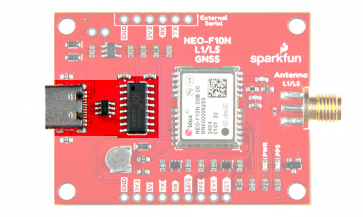 |
| USB, TVS Diodes, and CH340 Highlighted |
UART1
There are two pins on each row of headers currently labeled as TX and RX for the UART. Compared to other u-blox modules, there is no USB, I2C, SPI, or secondary UART port. The NEO-F10N has only one serial UART port available. The default baud rate is set to 38400 baud, 8-bits, no parity, and 1 stop bit. The NEO-F10N is set to output the following messages by default: NMEA GGA, GLL, GSA, GSV, RMC, VTG and TXT.
- TX — TX out from the NEO-F10N
- RX — RX into the NEO-F10N
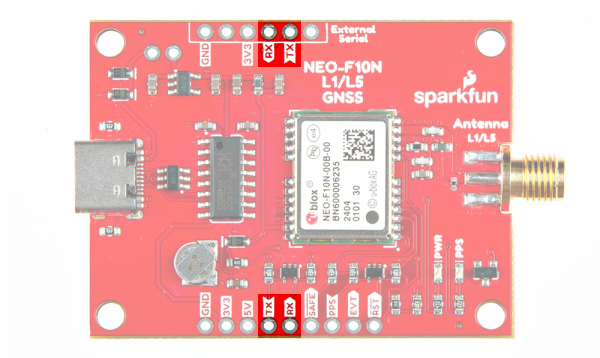 |
| UART Pins Highlighted |
These pins are currently tied to the CH340's UART pins. For users connecting the board's serial UART pins to a microcontroller or radio, you will need to cut the USB-TX and USB-RX jumpers to avoid bus contention.
The 1x6 header labeled as "External Serial" can be used to connect to any other serial device that has a standard serial UART header. For example, you can connect a BlueSMiRF v2 wirelessly stream serial data using SPP to a smartphone's Bluetooth® or a second BlueSMiRF.
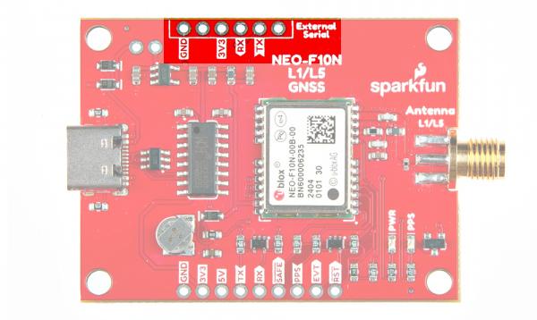 |
| External Serial Highlighted |
SMA Connector
The board is populated with one SMA connector for a secure connection. You will need a multiband GNSS antenna capable of receiving L1 and L5 bands to get the most out of the NEO-F10N. Note that this is intended for active antennas. We recommend using the GNSS L1/L5 Multi-Band High Precision Antenna - 5m (SMA). You will also need an antenna ground plate
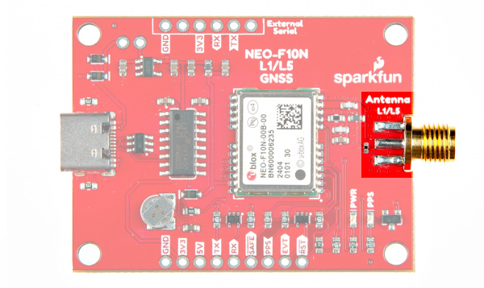 |
| SMA Connector Highlighted |
Broken Out Pins
There are four other pins broken out:
- SAFE — Safeboot input pin. This is required for firmware updates to the module and generally should not be used or connected.
- PPS — Pulse-per-second output pin. Begins blinking at 1Hz when module gets basic GPS/GNSS position lock.
- EVENT — Interrupt input/output pin. Can be configured using U-Center to bring the module out of deep sleep or to output an interrupt for various module states.
- RST/ RESET — Reset input pin. Pull this line low to reset the module.
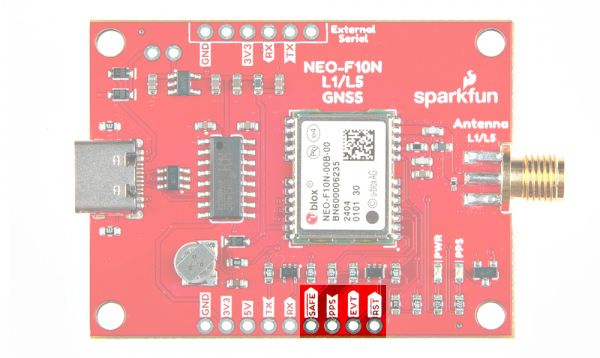 |
| Other Breakout Pins Highlighted |
LEDs
The board includes the following status LEDs as indicated in the image below.
- PWR — Indicates when the NEO-F10N is powered.
- PPS — Tied to the Pulse Per Second pin and acts as a visual indicator to the NEO-F10N's pulse per second signal.
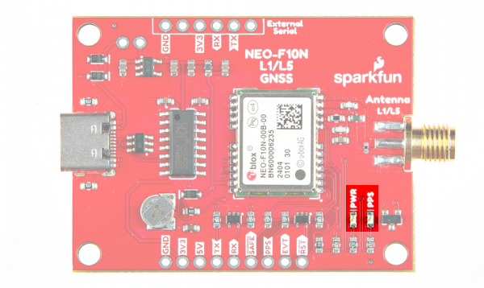 |
| LEDs Highlighted |
Jumpers
Note
If this is your first time working with jumpers, check out the How to Work with Jumper Pads and PCB Traces tutorial for more information.
If you flip the board over, you will notice a few jumper pads.
- SHLD — This jumper connects the USB Type C connector's shield pin to GND. By default, this is closed. Cut this to isolate the USB Type C connector's shield pin.
- USB-5V — This jumper connects the 5V net to the 5V VBUS net. By default, this is open. Add a solder blob to the jumper to connect 5V PTH to the USB's VBUS.
- MEAS — By default, the jumper is closed. You can cut this jumper and solder to the PTHs to measure the NEO-F10N's current draw from either the USB's VBUS or 5V net. Just make sure to close the jumper if you decide to still use power from the USB or the 5V pin.
- USB-TX — The USB-TX jumper connects the CH340 USB-to-Serial converter's RX pin to the NEO-F10N's TX pin. As stated earlier, cut this trace when connecting another serial device on the PTH to avoid bus contention.
- USB-RX — The USB-RX jumper connects the CH340 USB-to-Serial converter's TX pin to the NEO-F10N's RX pin. As stated earlier, cut this trace when connecting another serial device on the PTH to avoid bus contention.
- EXT-3V3 — This jumper connects 3.3V to the external serial port. By default, this is closed and will provide power to anything connected to the external serial port. To avoid conflicting voltages, cut this jumper if you are connecting 3.3V USB device with its own power source to the 1x6 header while the GNSS receiver is being powered with its own power source.
- PWR — The power LED will illuminate when 3.3V is activated either over USB or via the 3v3 pin. Cut this jumper to disable the LED.
- PPS — The pulse per second LED will illuminate each second once a position lock has been achieved. Cut this jumper to disable the LED.
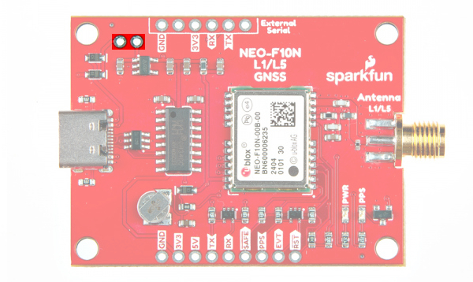 |
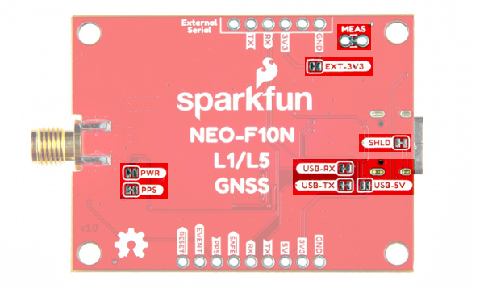 |
| MEAS PTH Highlighted - Top View | Jumpers Highlighted Highlighted - Bottom View |
3D Model
3D models of the board and components were exported to STEP and STL files using KiCad.
Board Dimensions
The board is 50.8mm x 38.1mm (2.0" x 1.5). This is not including the SMA connector. There are 4x mounting holes by each corner of the board for 4-40 screws and standoffs.
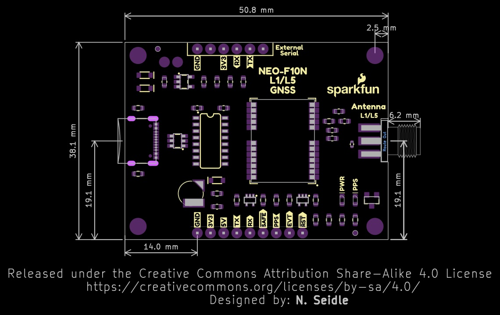 |
| Board Dimensions |
Hardware Hookup
In this section, we'll go over how to connect the L1/L5 GNSS Antenna to the SparkFun GNSS L1/L5 Breakout - NEO-F10N. Depending on your application, you can connect the SparkFun GNSS L1/L5 Breakout - NEO-F10N directly to your computer. For embedded application, you will want to connect the SparkFun GNSS L1/L5 Breakout - NEO-F10N to the IoT RedBoard - ESP32.
L1/L5 Dual-Band GNSS Antenna
Connect a compatible dual-band antenna that is capable of receiving L1 and L5 bands. In this case, we used the "GNSS L1/L5 Multi-Band High Precision Antenna - 5m (SMA)." Insert the SMA side of the interface cable into the GNSS L1/L5 Breakout Board's SMA connector. Secure the connection by using the SMA's hex nut until it is finger-tight.
You will need to include an antenna ground plate to get the most of the multi-band antenna. For the following images below, we'll have the magnetic mount antenna separate from the antenna ground plate when connecting the NEO-F10N breakout board to the rest of the system. When running the examples, make sure to have the antenna mounted over a metal ground plate.
 |
Note
Not all multiband antennas are made the same! Make sure that you are connecting a multi-band antenna that is capable of receiving L1/L5 signals when using the SparkFun GNSS L1/L5 Breakout - NEO-F10N. There is also another u-blox antenna that looks the same. However, the u-blox antenna used in this tutorial receives L1/L5 signals as opposed to the L1/L2.
USB to NEO-F10N
For users that simply want to connect to the board via USB, you will just need to insert a USB C cable into the USB connector. Then connect the other end to your computer's USB port.
Connecting via UART Port
Note
We recommend using the IoT RedBoard - ESP32 for the scope of this tutorial.
For users that are connecting to a microcontroller, you will need to adjust the jumpers and solder to the PTH before connecting to the SparkFun GNSS L1/L5 Breakout - NEO-F10N.
Cutting the Serial Jumpers
For this example, we will connect the NEO-F10N to the IoT RedBoard - ESP32. Remember, the NEO-F10N has only one UART. You will need to cut the two jumpers on the back of the board labeled as USB-RX and USB-TX so that there is no bus contention.
Connecting via PTH
Once the jumpers have been cut, you will need to solder to the through hole pins. For temporary connections to the PTHs, you could use IC hooks to test out the pins. However, you'll need to solder headers or wires of your choice to the board for a secure connection. You can choose between a combination of header pins and jumper wires, or stripping wire and soldering the wire directly to the board.


We decided to solder straight header pins to the 1x6 External Serial port. Your setup will look similar to the image below.

You will then need to connect power and the UART pins between the boards. Below is an example of connecting the IoT RedBoard - ESP32's second hardware UART port. When initializing the serial, make sure to define your microcontroller's hardware serial, such as Serial1 or Serial2. In this case, we needed to use UART2 for the IoT RedBoard - ESP32.
| IoT RedBoard - ESP32 | SparkFun GNSS L1/L5 Breakout - NEO-F10N |
|---|---|
| 3.3V | 3V3 |
| UART2_TX (D17) | RX |
| UART2_RX (D16) | TX |
| GND | GND |

Note
Note that some microcontrollers may not have enough memory and will not be compatible with the SparkFun u-blox GNSS Arduino Library v3 (i.e. ATmega328P on the RedBoard Plus and the Arduino Uno). There are also some microcontrollers that only have one hardware UART so you need to make sure that there are only two serial devices on the bus.
USB to Microcontroller
To power and program the IoT RedBoard - ESP32, users will just need to insert the Type C side of the cable to the development board. The other end will connect to a computer's USB port.

Connecting a Pair of BlueSMiRF V2s
For users that want have a wireless connecting between the IoT RedBoard - ESP32 and the SparkFun GNSS L1/L5 Breakout Board - NEO-F10N, you could add a pair of BlueSMiRF V2s.

If you have not already, check out the tutorial on the BlueSMiRFs if you decide to wireless transmit the data.
Installing the Arduino Library
Arduino
This example assumes you are using the latest version of the Arduino IDE on your desktop. If this is your first time using the Arduino IDE, library, or board add-on, please review the following tutorials.
Note
If you've never connected an CH340 device to your computer before, you may need to install drivers for the USB-to-serial converter. Check out our section on "How to Install CH340 Drivers" for help with the installation.
SparkFun has written a library to work with the u-blox NEO-F10N. You can obtain this library through the Arduino Library Manager by searching for "SparkFun u-blox GNSS v3". Find the one written by SparkFun Electronics and install the latest version. Users who prefer to manually install the library can get it from the GitHub Repository or download the .ZIP by clicking the button below:
Once you have the library installed checkout the various examples! There are several examples in the library that cover more than just the NEO-F10N. Note that some examples will not apply depending on the modules features. We will be looking at the NEO-F10N folder.
Note
According to the u-blox Integration Manual for the NEO-F10N, the current firmware does not support such as geofencing and low power mode so those examples contained in the library do not apply. Remember, the NEO-F10N only supports serial UART so the examples involving I2C and SPI do not apply either.
Enabling L5 Band and Overriding Health Status
By default, the L5 band is disabled on the NEO-F10N. To take advantage of the L5 band, you will need to:
- enable the L5 band
- override the health status check
- save the settings into memory
- perform a software reset
Configuring with the Arduino Library
Arduino
Make sure that you are using the SparkFun u-blox GNSS Arduino Library v3.1.1+ in order to be able to take advantage of the following functions.
To do this using the Arduino Library, users can add myGNSS.setVal8(UBLOX_CFG_SIGNAL_GPS_L5_ENA, 1), myGNSS.setGPSL5HealthOverride(true), and myGNSS.softwareResetGNSSOnly() in the setup() function after connecting an Arduino to the NEO-F10N's hardware UART. You will notice this at the end of the setup() function under the Example1_NAV_SIG.ino example.
myGNSS.setUART1Output(COM_TYPE_UBX); //Set the UART1 port to output UBX only (turn off NMEA noise)
myGNSS.saveConfigSelective(VAL_CFG_SUBSEC_IOPORT); //Save (only) the communications port settings to flash and BBR
myGNSS.setMeasurementRate(5000); //Produce one solution every five seconds (NAV SIG produces a _lot_ of data!)
myGNSS.setVal8(UBLOX_CFG_SIGNAL_GPS_L5_ENA, 1); // Make sure the GPS L5 band is enabled (needed on the NEO-F9P)
myGNSS.setGPSL5HealthOverride(true); // Mark L5 signals as healthy - store in RAM and BBR
myGNSS.setLNAMode(SFE_UBLOX_LNA_MODE_NORMAL); // Set the LNA gain to normal (full). Other options: LOWGAIN, BYPASS
myGNSS.softwareResetGNSSOnly(); // Restart the GNSS to apply the L5 health override
myGNSS.setAutoNAVSIGcallbackPtr(&newSIG); // Enable automatic NAV SIG messages with callback to newSIG
Configuring with U-Center
Users can also enable the L5 band via U-Center v22.07. Connect a USB cable between the NEO-F10N breakout board and your computer. Then open the software, connect to the COM port that the board enumerated to, and head to View > Generation 9 Configuration View. Once open, select the check box for GPS's L5. Select the check box for BBR and Flash. When ready, hit the Send Configuration button.

To override the health status by heading to View > Messages View > CUSTOM. With the Custom Messages set for Hex, paste the following to configure the settings in BBR and hit the send button:

Then send the following to configure the settings in FLASH and hit the send button:

Tip
To confirm that the above UBX messages were sent successfully, check the UBX-ACK-ACK messages after sending the message. For users that want to revert to the default behavior, make sure to check the NEO-F10N Integration Manual under "2.1.4 GPS L5 signal health status configuration" section page 10 under Table 5: UBX binary strings to revert the GPS L5 signal health status monitoring to default.
Ensure that the configuration is saved in BBR and Flash using the UBX-CFG-VALSET. Then send a UBX-CFG-RST message with resetMode 0x01 to apply the configuration stored in the BBR and flash layers.
The "Satellite Level History" window should update and include the L5 bands if it is available.

Arduino Examples
Now that we have our library and board add-on installed, we can start experimenting with the breakout board. For the scope of this tutorial, we will highlight one of the examples to get started. From there we will be able to build our own custom code to integrate the development board into a project.
Example 1: NAV-SIG
This example shows how to configure the NEO-F10N GNSS for L5 band and overriding the health status. The output will indicate the type of signals that the NEO-F10N is receiving. Head to the example in the NEO-10N folder (located in File Examples > SparkFun u-blox GNSS V3 > NEO-F10N > Example1_NAV-SIG).
If you have not already, select your Board (in this case the SparkFun ESP32 IoT RedBoard), and associated COM port. Upload the code to the board and set the Arduino Serial Monitor to 115200 baud. Give the NEO-F10N a few minutes to get a satellite lock. The signals available will be output in the Serial Monitor. If everything goes well, you should see some L5 signals (highlighted in red).

Example 12: Use UART
Note
Make sure that you have the latest version of the SparkFun u-blox GNSS v3 Arduino Library when using the "Use UART" example. You will need a microcontroller (e.g. ESP32) with enough memory to compile this example. Depending on the microcontroller that you use, you may also need to adjust the defined serial port from Serial2 to Serial1.
This example shows how to output your coordinates and satellites in view through the Serial UART. Head to the example in the NEO-10N folder (located in File Examples > SparkFun u-blox GNSS V3 > Basics > Example12_UseUart).
If you have not already, select your Board (in this case the SparkFun ESP32 IoT RedBoard), and associated COM port. Upload the code to the board and set the Arduino Serial Monitor to 115200 baud. Once there are enough satellites in view you should be able to see your coordinates and the number of satellites in view!

More Examples!
Now that you got it up and running, check out the SparkFun u-blox Arduino Library for other UART examples!
Troubleshooting
General Troubleshooting Help
Note
Not working as expected and need help?
If you need technical assistance and more information on a product that is not working as you expected, we recommend heading on over to the SparkFun Technical Assistance page for some initial troubleshooting.
If you don't find what you need there, the SparkFun Forums are a great place to find and ask for help. If this is your first visit, you'll need to create a Forum Account to search product forums and post questions.
Resources
Now that you've successfully got your SparkFun GNSS-RTK L1/L5 Breakout - NEO-F10N, SMA up and running, it's time to incorporate it into your own project! For more information, check out the resources below:
SparkFun Resources
- Schematic (PDF)
- KiCad Files (ZIP)
- 3D Model (STEP)
- Board Dimensions (PNG)
- Building a GPS System
- Arduino Library
- GitHub Hardware Repo
u-blox NEO-F10N Resources